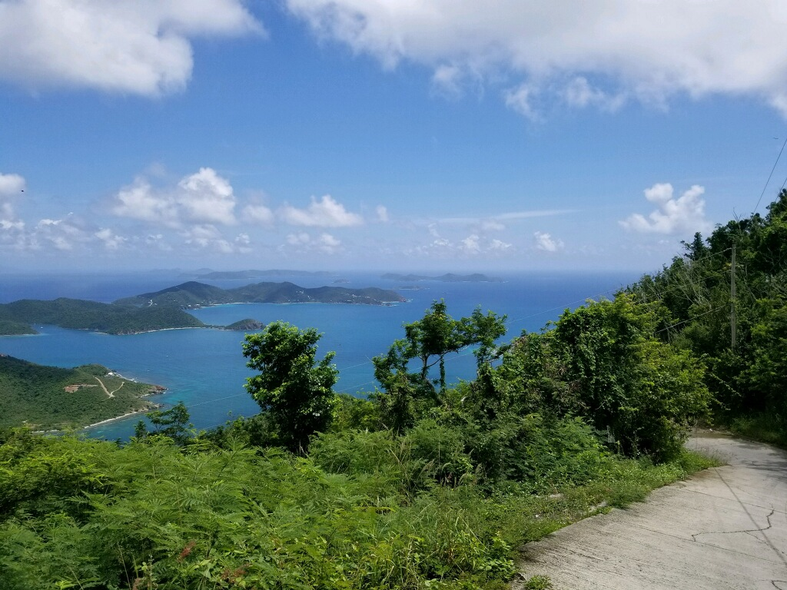

Arrival in St. Thomas
We rented a Jeep for the week, it seemed almost like a necessity for exploring the narrow mountainous roads on the island.
After a recommended stop at Pizza Amore (best pizza around) for a late lunch, we headed to our first night rental right next to the Charlotte Amalee Overlook. What a gorgeous view from our balcony.
At the resort
On the second day, we checked in to our villa at Marriott Frenchman's Cove Resort for the rest of our stay.
The beach was nice, we saw a couple of sting rays while snorkeling, but the rocks at the water's edge were full of urchins.
Monday we headed to the north side of the island to Magen's Bay Beach. The beach is located in a park with picnic tables, changing rooms, restrooms, and a bar. It was $5.00 a person and $2.00 for the vehicle. A beautiful beach that was worth the admission.
Tuesday evening brought Tropical Storm Karen in our direction at sunset. Wednesday was a little windy with occasional showers. The water was too rough to go swimming so we hung out under umbrellas at the pool.
Day trip to St. John
Later in the week, we headed off to explore the island of St. John. The car ferry packed us in like sardines.
A large part of St. John is a national park. There are several hiking trails and beaches. Our first stop was at Maho Bay Beach. There was limited parking, one outhouse type restroom, a few covered picnic tables, and a small beach shop across the road. Toward the end of the beach, there were some donkeys lounging in the sand.
The next beach we visited was Cinnamon Bay Beach. This beach was larger and also free. It offered a little more parking but a short walk to the beach. There appeared to be some nice facilities as this area was once a campground, but they were all closed for remodeling.
Before heading back to the ferry, we decided to do a little exploring in the Jeep. We drove through Coral Bay. The area smelled like raw sewage. We kept moving and the main road wound crazily up Bordeaux Mountain. The road was very narrow and rock strewn. It was a little unnerving but the views were spectacular. The photos do not do them justice.

Last days
We spent the last couple days lounging around the pool and on the beach at the resort topped off with another stop at Pizza Amore before heading to the airport.